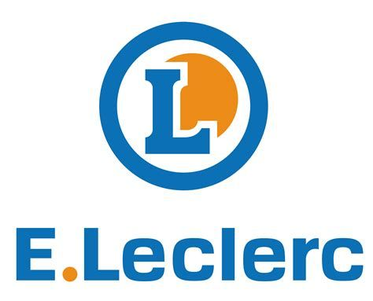

Leclerc France

Valeurs
- Nous souhaitons rendre tous nos produits accessibles pour les français.
- Le monde change et les prix augmentent mais nous nous battons tout les jours pour votre pouvoir d'achat
Leclerc: les réseaux sociaux
Notre futur
- Nous avons à coeur de devenir la grande surface de demain en restant proche de vous tout en étant une entreprise durable, écologique, et solidaire.
- En tant qu'acteur de demain nous avons le devoir de vous proposer des produits bio et qui aident nos agriculteurs français.
Les chiffres
- En 2017, les centres Leclerc ont réalisé un chiffre d’affaires en France de 44,8 milliards d’euros (37,2 milliards d’euros hors carburant), en progression de 2 % par rapport à 2016. Il est devenu le premier groupe de distribution en France, doublant Carrefour, avec une part de marché de 20,4 %.
- Les 541 adhérents du groupement E. Leclerc gèrent 681 magasins en France (dont 547 hypermarchés). Ils emploient 127 000 salariés..
- Leclerc a plus que les autres misés sur l’essor du drive, un entrepôt où les clients viennent retirer les produits commandés par Internet. Il en compte 619 et leur chiffre d’affaires a progressé de plus de 10 % en 2017.